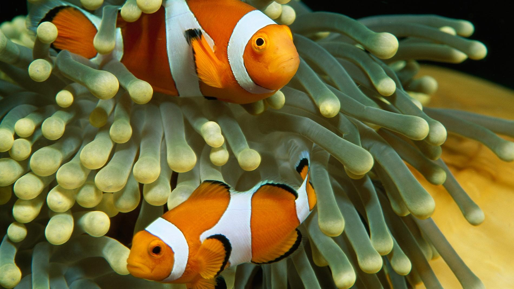

Company Profile
The Fish-Tastic Aquarium is located in the bustling Singapore financial district, close to the Singapore Ferris Wheel. Is Singapore's largest and most attractive to showcase the world of water creatures, ecology-themed tourist attractions. Is also one of the world's largest man-made mariculture.
The development and operation of Fish-Tastic is to guide the public from watching aquatic organisms to caring for water, from understanding the plight of aquatic life to the living environment of our humanity and protecting our common homeland. To this end, the Fish-Tastic Marine Aquarium has created the exclusive Green Green brand, and the "green" concept is fully embodied in the activities of the aquarium, the biological display, marketing activities, popular science courses and public welfare And caring activities.
Under the influence of the Fish-Tastic Marine Aquarium "My Green", more and more love the ocean, love green friends joined the aquarium "Friends of the Ocean" ranks, they have become the dissemination of marine knowledge, environmental protection messenger , While enhancing the soft power of East Asia and Singapore's financial district, it is also playing an active role in caring for the ocean and caring for aquatic life.
And we also provide relevant supporting services, pet shops and veterinarians
• Provide information about upcoming pet shops and veterinarians and show interesting images to attract their customers
• Provide open date and details of any promotion
 |
 |
|---|
